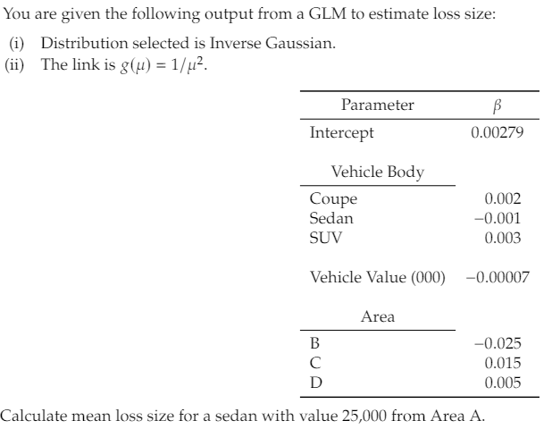
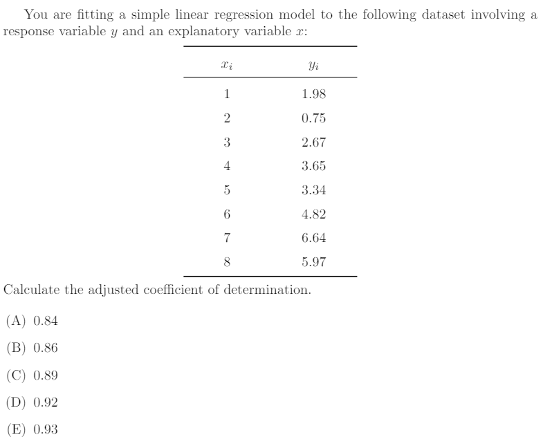

Final - Exam
Problem 1
You are given the following summary statistics:
\[\begin{align*} n &= 5 \\ \sum{x} &= 26 \\ \sum{y} &= 68 \\ \sum (x_i-\bar{x})^2 &= 64.8 \\ \sum (x_i - \bar{x})(y_i-\bar{y}) &= 156.4 \\ \sum (y_i-\bar{y})^2 &= 401.2 \end{align*}\]Determine the equation of the regression line, using the least squares method.
\(y = 1.049 + 2.414x\)
\(y = 1.049 - 2.414x\)
\(y = -2.414 - 1.049x\)
\(y = 2.414x - 1.049x\)
The correct answer is not given by (A), (B), (C), or (D).
Problem 2
The regression model is \(y=\beta_0 + \beta_1x+\epsilon\). There are five observations. The summary statistics are:
\[\begin{align*} \sum{x_i}&=15, \\ \sum{y_i} &= 47, \\ \sum x_i^2 &= 55, \\ \sum x_iy_i &= 183, \\ \sum y_i^2 &= 633 \end{align*}\]
Calculate the least squares estimate of \(\beta_1\).
- 4.0
- 4.2
- 4.4
- 4.6
- 4.8
Problem 3
The regression model is \(y=\beta_0 + \beta_1x+\epsilon\). There are 20 observations. The summary statistics are:
\[\begin{align*} \sum (x_i-\bar{x})^2 &= 1000 \\ \sum (y_i-\bar{y})^2 &= 640 \\ \hat{\beta}_1 &= -0.75 \end{align*}\]Calculate the value of the F-statistics for the testing of the significant of \(x\).
- 131
- 132
- 133
- 134
- 135
Problem 4
The regression model is \(y=\beta_0 + \beta_1x+\epsilon\). There are 8 observations. The summary statistics are:
\[\begin{align*} \bar{y} &= 100\\ \sum y^2_i &= 81,004 \\ \sum \hat{y}^2_i &= 80,525 \\ \end{align*}\]Calculate \(R^2\).
- 0.46
- 0.48
- 0.50
- 0.52
- 0.54
Problem 5
The results of fitting ten observation by the regression model, \(y=\beta_0 + \beta_1x+\epsilon\), are given below.
Determine the test results of the hypothesis \(H_0: \beta_1 = 0\) against \(H_{\alpha}: \beta_1 \neq 0\).
| Estimate | Std. Error | t value | Pr(>|t|) | |
|---|---|---|---|---|
| Intercept | -3.2000 | 2.3295 | -1.374 | 0.26319 |
| x | 4.2000 | 0.7024 | 5.980 | 0.00936 |
A. Reject at \(\alpha = .2\)
B. Reject at \(\alpha = .1\)
C. Reject at \(\alpha = .05\)
D. Reject at \(\alpha = .01\)
E. All (A), (B), (C), or (D) are correct.
Problem 6
You are given the following data
| \(y\) | \(x_1\) | \(x_2\) |
|---|---|---|
| 2 | 1 | 1 |
| 3 | 1 | 0 |
| 4 | 2 | 0 |
| 6 | 0 | 2 |
| 10 | 0 | 1 |
You are using the following model:
\[ y_i = \beta_0 + \beta_1 x_{i1} + \beta_2 x_{i2} + \epsilon_i, \quad i = 1, 2,..., 6 \]
You have determine
\[ (X'X)^{-1} = \begin{bmatrix} 2.333 & -1.333 & -1.333\\ -1.333 & 0.933 & 0.733 \\ -1.333 & 0.733 & 0.933 \end{bmatrix} \]
Determine \(\hat{\beta_1}\).
- -3.4
- -3.6
- -3.8
- -4.0
- -4.2
Problem 7
Problem 8
Problem 9

- 80
- 160
- 320
- 640
- 1280
Problem 10

Problem 11
Problem 12
Problem 13
Problem 14

Problem 15
Problem 16
You are given:
- The random walk model
\[ y_t = y_0 + c_1 + c_2 + c_3 +...+c_t, \]
where \(c_i, (i = 1, 2,..., t)\) denote observations from a white noise process.
- The following ten observed values of \(c_t\):
| t | 1 | 2 | 3 | 4 | 5 | 6 | 7 | 8 | 9 | 10 |
|---|---|---|---|---|---|---|---|---|---|---|
| \(y_t\) | 2 | 5 | 10 | 13 | 18 | 20 | 24 | 25 | 27 | 29 |
- \(y_0 = 0\)
Calculate the standard error of the 8 step-ahead forecast, \(\hat{y}_{18}\) .
- 4/3
- 4
- 9
- 12
- 16
Problem 17
You are given the following six observed values of the autoregressive model of order one time series
\[ y_t = \beta_0 + \beta_1 y_{t-1} + \epsilon_t, \text{ with } Var(\epsilon_t) = \sigma^2. \]
| \(t\) | 1 | 2 | 3 | 4 | 5 | 6 |
|---|---|---|---|---|---|---|
| \(y_t\) | 31 | 35 | 37 | 41 | 45 | 51 |
The approximation to the conditional least squares method is used to estimate \(\beta_0\) and \(\beta_1\)
Calculate the mean squared error \(s^2\) that estimates \(\sigma^2\)
- 13
- 21
- 22
- 26
- 35
Problem 18
- 4.5
- 5.5
- 6.5
- 7.5
- 8.5
Problem 19
- 19
- 20
- 21
- 23
- 24
Problem 20
- 2.1
- 2.3
- 2.5
- 2.7
- 2.9
Problem 21
- 14.8
- 15.8
- 16.8
- 17.8
- 18.8
Problem 22
- 4
- 5
- 6
- 7
- 8
Problem 23
- 0.32
- 0.34
- 0.36
- 0.38
- 0.40